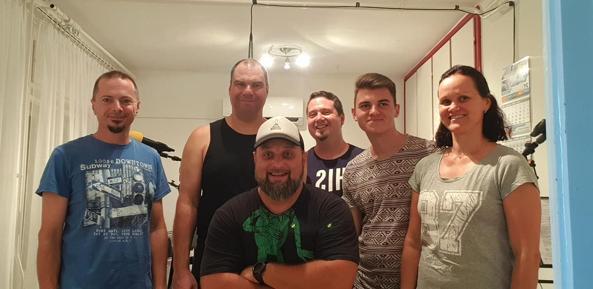
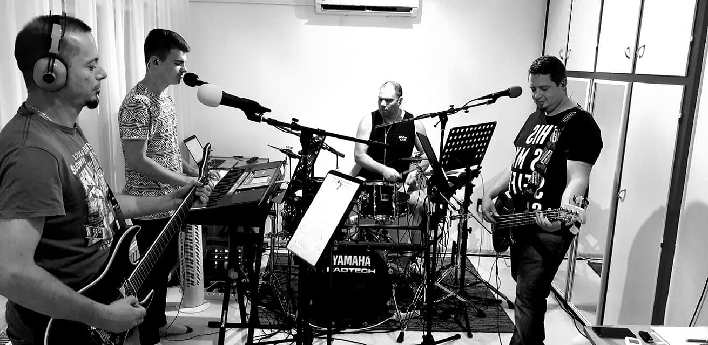
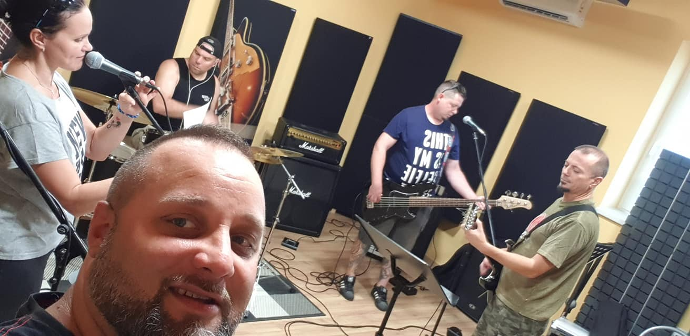

Moonshiners
Home
Rólunk
Rólunk
A zenekarról
Fülöp Tamás
Szücs Krisztina
Deák Sándor
Fodor István
Hollósi József
Krisztics Csaba
Sipos Dávid
Multimédia
Demo
Audio
Galéria
Video
Egyéb
Kapcsolat
Partnerek
Adatvédelem



Previous
Next
Hírek
A Moonshiners zenekar tagjai:
Fülöp Tamás
dob
Szücs Krisztina
ének
Deák Sándor
ének, akusztikus gitár
Fodor István
herfli
Hollósi József
basszus, ének
Krisztics Csaba
gitár
Sipos Dávid
billentyű, ének